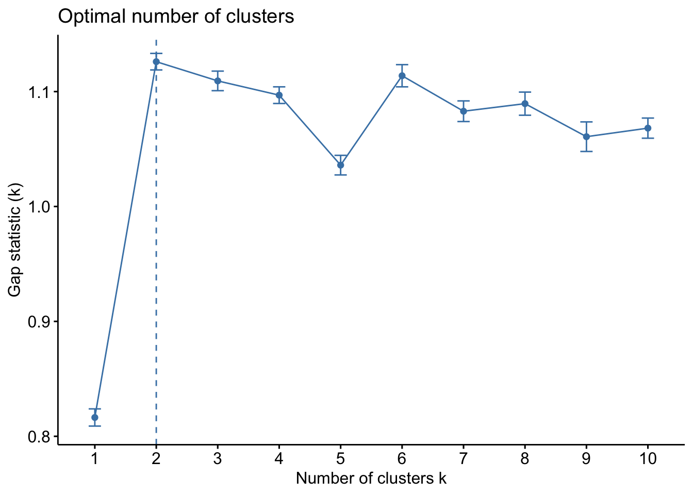

pacman::p_load(dplyr)
# Load both datasets
data_purchase <- read.csv(file = "https://www.dropbox.com/s/126e9vkq80y9ti9/purchase.csv?dl=1",
header = T)
data_demo <- read.csv("https://www.dropbox.com/s/hbrgktcz98y0igs/demographics.csv?dl=1",
header = T)
# Left join demographic data into purchase data
data_full <- data_purchase %>%
left_join(data_demo, by = "ID")
# Handle Missing Values of Income
data_full <- data_full %>%
mutate(Income = replace(Income, is.na(Income), mean(Income,na.rm =T))) Improving Marketing Efficiency Using Predictive Analytics
MSIN0094 Case Study
1 Predictive Analytics and Marketing1
Marketing research has traditionally focused on causal inference. The focus on causation stems from the need to make counterfactual predictions. For example, will increasing advertising expenditure increase demand? Answering this question requires an unbiased estimate of advertising impact on demand. However, the need to make accurate predictions is also important to marketing practices. For example, which consumers to target, which product configuration a consumer is most likely to choose, which version of a banner advertisement will generate more clicks, and what the market shares and actions of competitors are likely to be. All of these are prediction problems. These problems do not require causation; rather, they require models with high out-of-sample predictive accuracy. Predictive analytics (machine learning, ML) tools can address these types of problems.
Machine learning (ML) refers to the study of methods or algorithms designed to learn the underlying patterns in the data and make predictions based on these patterns. A key characteristic of predictive analytics techniques is their ability to produce accurate out-of-sample predictions. Consider the problem of predicting whether a user will click on an ad. We do not have a comprehensive theory of users’ clicking behavior. Predictive analytics methods can automatically learn which of these factors affect user behavior and how they interact with each other, potentially in a highly non-linear fashion, to derive the best functional form that explains user behavior virtually in real time. Predictive analytics methods typically assume a model or structure to learn, but they use a general class of models that can be very rich.
Predictive analytics models can be divided into two groups: supervised learning and unsupervised learning. Supervised learning requires input data that has both predictor (independent) variables and a target (dependent) variable whose value is to be estimated. If the goal of an analysis is to predict the value of some variable (e.g., whether customer responds to our marketing offers; whether customers churn at some point in time), then supervised learning is used.
On the other hand, unsupervised learning does not identify a target (dependent) variable, but rather treats all of the variables equally. In this case, the goal is not to predict the value of a variable, but rather to look for patterns, groupings, or other ways to characterize the data that may lead to an understanding of the way the data interrelate. Cluster analysis is an example of unsupervised learning, which helps data analysts find customer segments based on provided characteristics.
In this case study, we are going to analyze the same dataset as in Week 2 Preliminary Customer Analysis. Our task is to use predictive analytics tools to help Tesco conduct more effective targeted marketing.
As a quick recap, the variable definitions are as follows:
Demographic Variables
- ID: Customer’s unique identifier
- Year_Birth: Customer’s birth year
- Education: Customer’s education level
- Marital_Status: Customer’s marital status
- Income: Customer’s yearly household income
- Kidhome: Number of children in customer’s household
- Teenhome: Number of teenagers in customer’s household
- Dt_Customer: Date of customer’s enrollment with the company
Customer Purchase History Data
- ID: Customer’s unique identifier
- MntWines: Amount spent on wine in last 2 years
- MntFruits: Amount spent on fruits in last 2 years
- MntMeatProducts: Amount spent on meat in last 2 years
- MntFishProducts: Amount spent on fish in last 2 years
- MntSweetProducts: Amount spent on sweets in last 2 years
- NumDealsPurchases: Number of purchases made with a discount
- NumWebPurchases: Number of purchases made through the company’s web site
- NumCatalogPurchases: Number of purchases made using a catalogue
- NumStorePurchases: Number of purchases made directly in stores
- NumWebVisitsMonth: Number of visits to company’s web site in the last month
- Complain: 1 if customer complained in the last 2 years, 0 otherwise
- Response: 1 if customer accepted the offer in the last campaign, 0 otherwise
- Recency: Number of days since customer’s last purchase
2 Uncover Customer Segments Using Unsupervised Learning
- We aim to do customer segmentation based on total spending and income.
First of all, we need to re-scale the two variables using scale(), because the two variables are of very different scales
- Run the K-means clustering algorithm using
kmeans()
We can examine the structure of the result_kmeans using str()
List of 9
$ cluster : int [1:2000] 1 2 1 2 2 1 2 2 2 2 ...
$ centers : num [1:2, 1:2] 0.95 -0.663 1.022 -0.713
..- attr(*, "dimnames")=List of 2
.. ..$ : chr [1:2] "1" "2"
.. ..$ : chr [1:2] "Income" "total_spending"
$ totss : num 3998
$ withinss : num [1:2] 726 553
$ tot.withinss: num 1280
$ betweenss : num 2718
$ size : int [1:2] 822 1178
$ iter : int 1
$ ifault : int 0
- attr(*, "class")= chr "kmeans"- Visualize the clustering

- Determine the optimal number of clusters using statistical criteria
- Gap Method
set.seed(888)
gap_stat <- clusGap(data_kmeans,
FUN = kmeans,
K.max = 10,
B = 50)
fviz_gap_stat(gap_stat)
- Silhouette method

From both methods, it seems K = 2 is the best choice.
- Compare the CLV in the two segments, and decide which segment to serve.
3 Tesco’s Task: Acquire Customers to Try New Products
Tesco is looking to promote its new private-label products to existing customers. The marketing analytics team decides to use the conventional mailing marketing strategy so that customers would receive color-printed leaflets via Royal Mails to their doorsteps.
Each mail costs £1.5 to produce and another £0.5 to mail to the customers. If a customer responds to the offer, the data analytics team expects customers to spend £20 on trying the new products, where the COGS is 60%.
In this case study, we will learn how Tesco can use the power of predictive analytics to greatly improve its marketing efficiency and return on investment. Whether a customer responded to our marketing offer in the last marketing campaign is recorded in the Respone variable in the dataset.
3.1 Break-Even Analysis for Making Marketing Offers
First, we need to compute the profit margin (the net profit) if a customer responds to the marketing offer and buys from Tesco.
Second, compute the break-even response rate for a customer.
The cost is the marketing offer we send,
cost_per_offerThe benefit is the profit margin if a customer responds,
profit_per_customerIn order to break-even, we can calculate the break-even response rate from customers:
Which means, only if a customer responds to us with at least 25% response rate can we recover the costs of making an marketing offer.
4 Data Preparation and Model Training
4.1 Data wrangling and cleaning
Tasks: Merge the demographic information into purchase history data.
pacman::p_load(dplyr)
# Load both datasets
data_purchase <- read.csv(file = "https://www.dropbox.com/s/126e9vkq80y9ti9/purchase.csv?dl=1",
header = T)
data_demo <- read.csv("https://www.dropbox.com/s/hbrgktcz98y0igs/demographics.csv?dl=1",
header = T)
# Left join demographic data into purchase data
data_full <- data_purchase %>%
left_join(data_demo, by = "ID")
# Handle Missing Values of Income
data_full <- data_full %>%
mutate(Income = replace(Income, is.na(Income), mean(Income,na.rm =T))) 4.2 Select features/predictors
Tasks: select meaningful features/predictors from data_full, named data_full_small
Since
IDis customer ID only, so should be removed from final dataSince
Dt_Customeris a character string, which cannot be directly used in the model, we should also remove it
4.3 Construct a training set and a test set
Tasks: randomly divide data_full into a training set and a test set
# use nrow() to count the number of rows in data_full_smaller
n_rows_data_full <- nrow(data_full_smaller)
# set a seed, so that we can get the same set of results every time we rerun the model
set.seed(8888)
# use sample() to randomly draw row index from data_full
training_index <- sample(x = 1:n_rows_data_full, # draw from 1 until 2000
size = 0.7 * n_rows_data_full, # size is 70% of 2000
replace = FALSE) # do not sample with replacement
# think of data_full_smaller as a matrix, we can select rows based on training_index
data_training <- data_full_smaller[training_index,]
# minus sign means deselecting rows
data_test <- data_full_smaller[-training_index,]4.4 Train a decision tree
Tasks: load the rpart and rpart.plot packages. Follow the code examples in the lecture notes and try to train a decision tree on data_training
pacman::p_load(rpart,rpart.plot)
# write your codes below from what we learned in class.
decision_tree <- rpart(
formula = Response ~ MntWines + MntFruits + MntMeatProducts + MntFishProducts +
MntSweetProducts + MntGoldProds + NumDealsPurchases + NumWebPurchases + NumCatalogPurchases +
NumStorePurchases + NumWebVisitsMonth + Complain + Year_Birth + Education +
Marital_Status + Income + Kidhome + Teenhome + Recency,
data = data_training,
method = "anova" )4.5 Train a random forest
Tasks: load the ranger packages. Follow the code examples in the lecture notes and try to train a random forest on data_training
pacman::p_load(ranger)
# write your codes below:
set.seed(888)
randomforest <- ranger(
formula = Response ~ MntWines + MntFruits + MntMeatProducts + MntFishProducts +
MntSweetProducts + MntGoldProds + NumDealsPurchases + NumWebPurchases + NumCatalogPurchases +
NumStorePurchases + NumWebVisitsMonth + Complain + Year_Birth + Education +
Marital_Status + Income + Kidhome + Teenhome + Recency,
data = data_training,
num.trees = 500
)
# make prediction on the test set
prediction_from_randomforest <- predict(randomforest, data_test)
# mutate a new column in data_test for the predicted probability from random forest
data_test <- data_test %>%
mutate(predicted_prob_randomforest = prediction_from_randomforest$predictions)5 Improving Marketing Efficiency Using Predictive Analytics
5.1 Blanket marketing
If Tesco does blanket marketing and sends marketing offers to all 600 customers in the test set, the total marketing costs would be
[1] 1200And the total profits from the blanket marketing would be
[1] 99Therefore, the Return on Investment (ROI) on the marketing offer would be
Return on Investment
ROI = Net Profits / Initial Investments, which means the return rate of an investment activity.
- ROI needs to be a positive number in order for the company to make profits from the investment.
# net profits = total_profit_blanket - total_costs_of_mailing_blanket
# initial investment = total_costs_of_mailing_blanket
# So ROI is below:
ROI_blanket <- (total_profit_blanket - total_costs_of_mailing_blanket)/total_costs_of_mailing_blanket
ROI_blanket[1] -0.34A negative ROI from blanket marketing means, the company makes a loss from sending offers to all customers in the test set. The reason is that, not all customers are responsive to our marketing offers. It does Tesco no good from sending offers to those customers who would not respond anyway.
5.2 Targeted marketing using predictive analytics
However, if Tesco uses the trained decision tree model to conduct targeted marketing, and only target those customers who are predicted to be more responsive than the break-even response rate by decision trees, what would happen to the ROI?
5.2.1 Predict response rate from decision tree model
First, we have already trained the decision tree model, named decision_tree, from the training set. We can predict the probability of test set customer responding to our marketing offer, using predict().
# use predict() to make prediction on the test set
# Note that prediction_from_decision_tree is already a vector,
# which we can directly mutate into
prediction_from_decision_tree <- predict(decision_tree, data_test)
# mutate a new column in data_test for the predicted probability
data_test <- data_test %>%
mutate(predicted_prob_decisiontree = prediction_from_decision_tree)5.2.2 Select customers to target
Tasks: We should only send marketing offers to consumers whose expected or predicted response rate is larger than the break-even response rate. This is called targeted marketing.
5.2.3 Compute ROI for decision tree targeted marketing
Finally, we have decided to send marketing offers to selected responsive customers. We can then compute the ROI for targeted marketing as in the blanket marketing case.
# total marketing costs
total_costs_of_mailing_decisiontree <- cost_per_offer * sum(data_test$is_target_decisiontree)
# total profits from responding customers
total_profit_decisiontree <- sum((data_test%>%filter(is_target_decisiontree==1))$Response) * profit_per_customer
# Compute ROI
ROI_decisiontree<- (total_profit_decisiontree - total_costs_of_mailing_decisiontree)/total_costs_of_mailing_decisiontree
ROI_decisiontree[1] 0.8550725Finally, if Tesco uses random forest, an arguably better supervised learning model, to conduct targeted marketing, we can follow a similar logic as above, and compute the ROI from using random forest.
# mutate a new binary indicator for whether to target a customer based on predicted prob from random forest model
data_test <- data_test %>%
mutate(is_target_randomforest = ifelse(predicted_prob_randomforest > break_even_response,1,0))
# total marketing costs
total_costs_of_mailing_randomforest <- cost_per_offer * sum(data_test$is_target_randomforest)
# total profits from responding customers
total_profit_randomforest <- sum((data_test%>%filter(is_target_randomforest==1))$Response) * profit_per_customer
# Compute ROI
ROI_randomforest<- (total_profit_randomforest - total_costs_of_mailing_randomforest)/total_costs_of_mailing_randomforest
ROI_randomforest[1] 1.031746Predictive analytics model can help the company boost the marketing ROI by allowing Tesco to target customers who are more likely to respond to the marketing offers than the break-even response rate. By doing so, Tesco saves unnecessary marketing costs on those unresponsive customers and therefore improves its marketing efficiency.
Footnotes
This section is heavily borrowed from Chapter 11 of Handbook of Marketing Analytics. For the full article, you can have assess via UCL library service.↩︎